旅行衣橱 · 同数据对照
2026-11-18。现版 731f0d4 和独立样板使用同一评审库存、相同的溪边薄荷初始搭配，以及同一件黔山初见上装。
390×844 · 试穿同一件上装
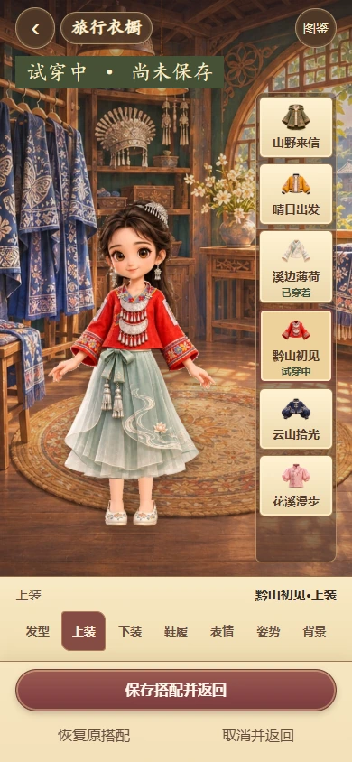
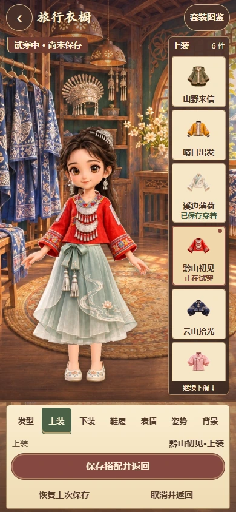
右边的衣架标签回答两件事：目前试穿哪一件，最后保存哪一件。桌沿保留七个类别和三项操作，场景画面与桌沿接在一起。
360×640 · 初始搭配与衣架末项
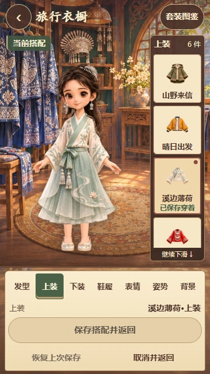
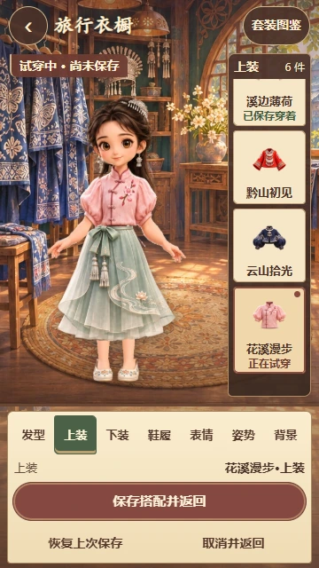
360×640 · 表情、姿势与背景
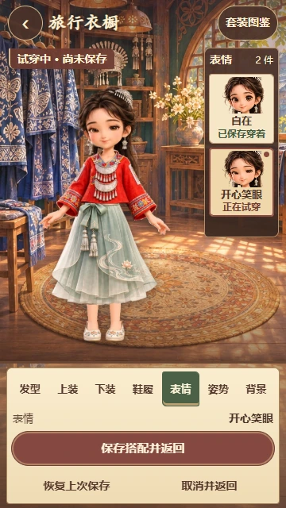
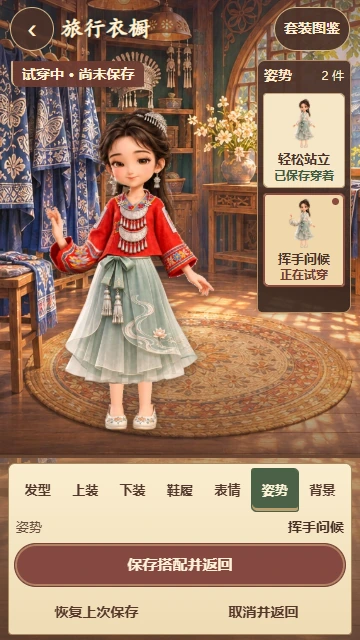
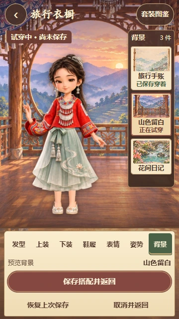
360×640 · 返回与失败恢复
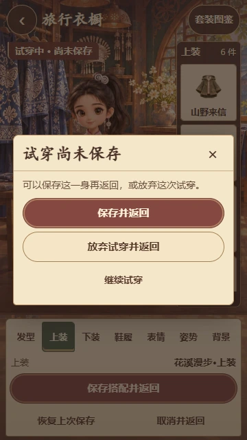
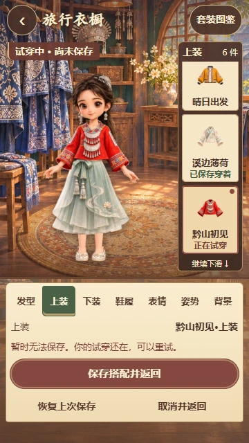
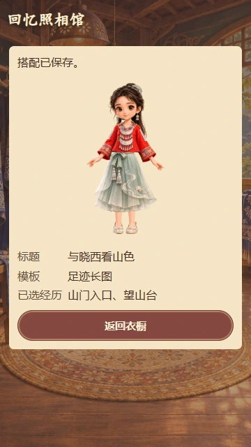
1440×1000 · 桌面
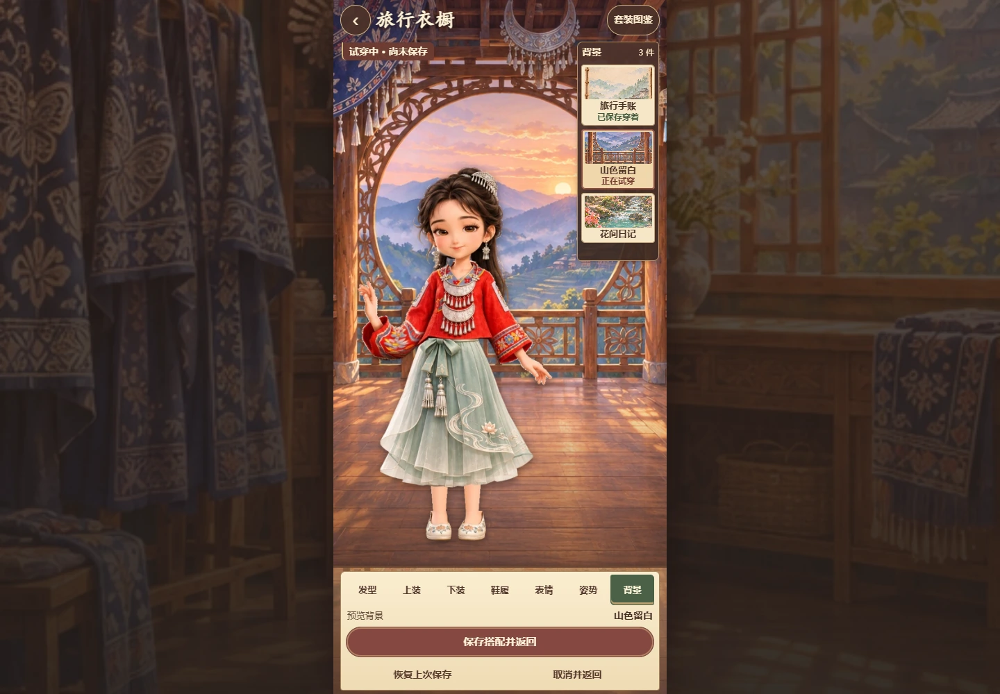